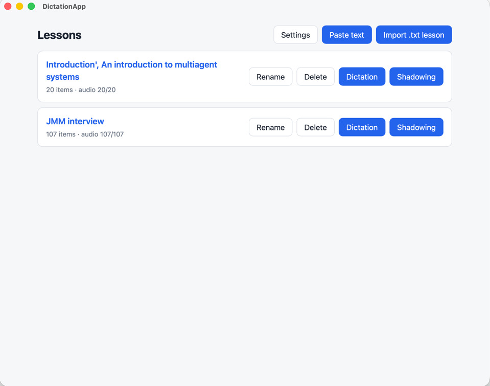

1. Bring your material
Use articles, study notes, or interview answers. Prepare lessons from text that matters to you.
Your material. Your pace.
Learn a language one sentence at a time. Turn the text you care about into dictation and shadowing practice, then repeat it until you can keep up.
Free app · Bring your own text · Reuse generated audio

A simple routine
Use articles, study notes, or interview answers. Prepare lessons from text that matters to you.
Generate speech with Azure or ElevenLabs. Type what you hear in dictation, or listen and repeat aloud in shadowing.
Slow down, loop a difficult passage, and reuse cached audio. Export and import lessons with their existing audio between devices.
English is the default, not the limit. Practice French, Spanish, Japanese, German, and other languages supported by your speech provider. Choose a matching voice; word-level dictation scoring works best with languages that separate words with spaces.
Practice without paying a penny
500,000
characters per month with Neural TTS on the Free F0 tier.
10,000
credits per month on the Free plan: 10,000 characters if used entirely for Multilingual v2.
Use the free plans and stay within their allowances to practice without spending a penny. Generate a passage once; replaying cached audio does not use more synthesis allowance. Other ElevenLabs products share the credit pool, and model rates vary.
Use Azure for everyday material and ElevenLabs for selected passages. Thank you, Microsoft and ElevenLabs, for making this simple approach accessible through your generous free plans.
Set up Azure or ElevenLabs →Allowances checked on 4 October 2026. See Azure pricing and ElevenLabs pricing for current terms.
Why I built it
I just want to learn English the dumbest, most basic way: listen and repeat. I don't need anything fancy.
I believe we should begin like a child learning from their mother: she says a sentence, and the child tries to say it back. To me, being able to follow and repeat a sentence is already half the battle.
Expensive, general-purpose learning apps can miss the exact thing we struggle with. I want ordinary learners to practice privately, without judgment or the pressure of another subscription. In the AI era, we can create a spoken model and repeat our difficult sentences patiently, as often as we need.
I'm ordinary at learning languages. Admitting that takes a huge weight off my shoulders. I don't have to pretend I catch every word or speak confidently before I am ready. I can say, “I didn't get that. Let me hear it again.”
If you admit you are ordinary at this too, I'm with you. We're on the same team. You don't have to impress me or hide how often you repeat a sentence. Ten times? A hundred? Take the time you need. There is no audience to judge you.
Ordinary is where we start. It does not decide how far we can go. Let's stop proving we are talented and practice the sentence in front of us. Hear it. Follow it. Say it back.
If you're tired of pretending language learning comes easily, pull up a chair. You're one of us. Let's be slow, stubborn learners together—one sentence at a time.
Read the author's learning philosophy →